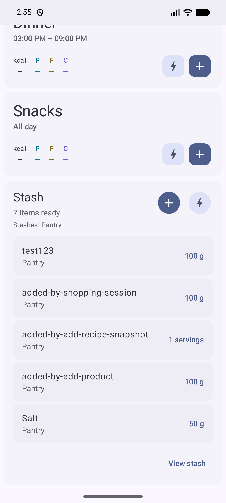
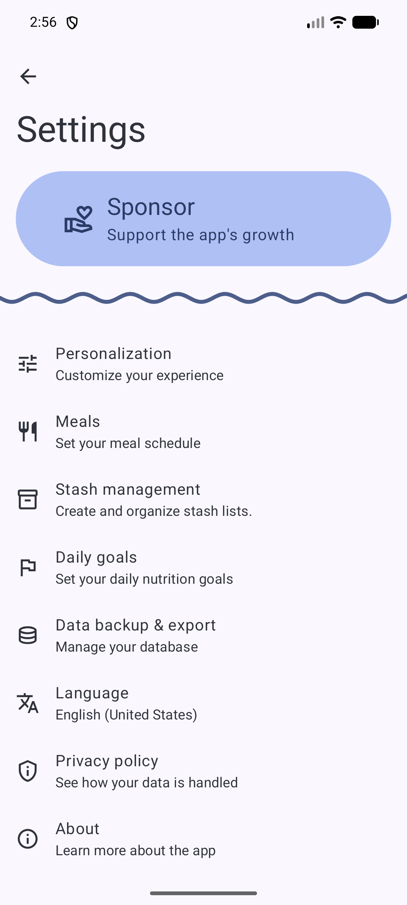

Track what you have, add what you buy
Use stash to keep a running inventory of the food in your kitchen. Add products from your catalog, snap a recipe into a fixed-portion item, batch-add everything from a shopping trip, or quick-add a one-off without touching your product list.
Where to start
You can reach stash actions from two places: the Home Stash card or Stash Management (accessible from the home card or settings).


Add a product from your catalog
Open the Add flow
Tap Add on the Home Stash card or a stash row in Stash Management. A search screen opens where you can find any product or recipe in your food catalog.
Choose a product
Search by name, then tap the product you want. The measurement picker appears with the units the product supports — grams, millilitres, packages, or servings.
Pick a measurement and save
Select the unit that matches how you stored it, enter the amount, and confirm. The item lands in the target stash immediately. If you have multiple stashes, you can pick the target before saving.
Save a recipe as a stash snapshot
When you cook a batch from a saved recipe, you can turn it into a stash item that keeps its nutrition and portion size even if you later edit the original recipe.
Start from Add, then pick a recipe
From the same Add search screen, tap a recipe instead of a product. The recipe snapshot screen opens.
Set portion details
Choose a unit (grams, millilitres, or fractional servings), enter the total amount, optionally set the number of servings made, and pick the target stash. A nutrition preview updates as you change the values.
Confirm the snapshot
Save it. The stash item holds the nutrition and amount from that moment, so editing the original recipe later will not affect items already in stash.
Quick-add a one-off item
For homemade, unpackaged, or temporary foods that do not belong in your reusable catalog, Quick Add lets you type a name and macros directly into stash.
Tap Quick Add
From the Home Stash card or a stash row in Stash Management, tap Quick Add.
Fill in name, macros, and unit
Enter the food name, energy, protein, carbs, and fat. Pick a measurement unit (grams, ounces, millilitres, or fluid ounces), then choose the target stash.
Save without creating a catalog entry
The item exists only inside stash. It will not appear in your food catalog or recipe list.
Shopping session — batch-add from one trip
A shopping session is a draft: search stays visible while you add product after product, adjust amounts, and then confirm everything at once.

Start a session from Stash Management
Tap the Shopping icon on the stash row you want to restock. The session opens with search ready.
Search, pick, and add each product
Type to search your catalog, tap a product, set the measurement and quantity in the composer, then press Add. The product joins the session list and search resets so you can find the next one. Recipes cannot be added through a shopping session — use the Add → Recipe flow for those.
Review and adjust quantities in the session list
The session list at the bottom shows every product you added, with editable quantities and a running calorie total.
Confirm the session
When you are done, confirm the session. Every item is saved into the target stash and you are taken to the stash browser.
After saving — browsing your stash
Once an item lands in a stash, it shows up in the stash browser. From there you can: